ВОГНЕВА ПІДГОТОВКА - КУТОВІ ВЕЛИЧИНИ
Поняття тисячної
У стрілецькій практиці для вимірювання кутів користуються не градусами, а поділками кутоміра (тисячної).
Для визначення поділки кутоміра коло довільного радіуса ділять на 6000 рівних частин. З’єднавши кінці дуг з центром кола за допомогою радіусів, одержимо 6000 рівних центральних кутів.
| 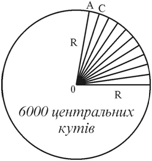 | 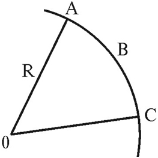 |
| Утворення поділок кутоміра (тисячної) | Тисячна |
З геометрії відомо, що довжина кола дорівнює 2ΠR або 6,28R (R – радіус кола). Оскільки ми коло поділили на 6000 рівних частин, тоді дугу АВ можна виразити так:
АВ або 0-01(одна тисячна) = 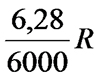. Спростимо цю формулу, поділивши на 6,28. Дістанемо 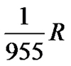 для зручності розрахунків, оскільки дальність стрільби у стрілецької зброї невелика, заокруглюємо до 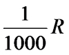, де R приймається як відстань до предмета, за яким спостерігають.
Отже, поділкою кутоміра (АВ) або тисячною(0-01) зветься центральний кут, дуга якого дорівнює 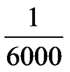 довжини кола, або 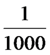 радіуса (дальності).
Поділка кутоміра (тисячна) дозволяє легко переходити від кутових величин до лінійних розмірів і навпаки, бо довжина дуги відповідає поділці кутоміра на всіх дальностях і складає - дальності
Отож куту в 0-01 (одна тисячна) на дальності 1000 м відповідає дуга – 1 м (1000 : 1000), на дальності 500 м – 0,5 м (500 : 1000), на дальності 2000 м – 2 м (2000 : 1000)
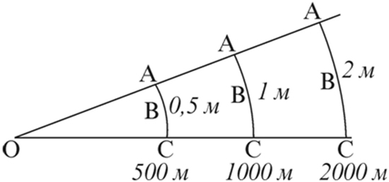Куту на декілька тисячних поділок кутоміра відповідає дуга, що дорівнює одній тисячній дальності, помноженій на кут (У – в тисячних)
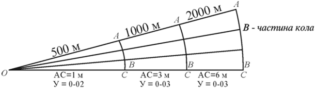Тобто 0-01 (одна тисячна) на 100м відповідає дузі в 0,1 м (10 см). Це можна застосувати, наприклад, при приведенні зброї до нормального бою (бо ж мішень зазвичай ставиться як раз на 100м). Якщо СТВ (середня точка влучання) віддалена на 10 см від КТ (контрольної точки) на пристрілочній мішені, то це віддалення, ми кажемо, відповідає куту в 0-01 тис. Якщо зміщення складає 20см, то кут буде відповідно 0-02 тис на 100м, 30 см 0-03 тис на 100м і т.п.
Форма запису тисячних
При читанні величин кутів у поділках кутоміра сотні ділень промовляють окремо від десятків та одиниць. Також і записують, відокремлюючи сотні від десятків з одиницями. Це лише формальний запис зроблений для зручності користування.
| Кут в поділці кутоміра | Як записується | Як промовляється |
|---|---|---|
| 1220 | 12-20 | Дванадцять двадцять |
| 3000 | 30-00 | Тридцять нуль |
| 500 | 5-00 | П’ять нуль |
| 207 | 2-07 | Два нуль сім |
| 185 | 1-85 | Один вісімдесят п’ять |
| 82 | 0-82 | Нуль вісімдесят два |
| 4 | 0-04 | Нуль-нуль чотири |
Застосування
З вище описаних залежностей і виходить відома формула "Дуй в тисячу" для обчислення відстанні до цілі на місцевості:
Д = В/У х 1000
Д – дальність до предмета
В – висота (ширина) предмета, м
У – кутова величина предмета, тис.
Більш детально про визначення відстаней до цілі таким чином можна прочитати в розділі
ТОПОГРАФІЯ - Визначення
кутів і відстаней.
Тисячні використовуються в усіх радянських видах озброєння, приладах
спостереження тощо на шкалах,
в кутомірах. В тисячних записують дирекційні кути.
1тис = 0,06 °
1 тис = 3,437MOA
Градуси. Переведення градусів в тисячні.
Тепер, якщо не вдаватись в подробиці, то градуси це фактично такі кутові величини, коли ми ділимо коло на 360 рівних частин (360°).
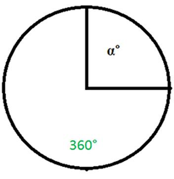1° в свою чергу можна розділити на 60 рівних частин, які називаються кутовими хвилинами(або просто хвилинами, MOA) і позначаються '.
Тобто 1° = 60' (хвилин)
Кожну 1' можна розділити на 60 рівних частин , які називаються секундами і позначаються ''.
Тобто 1' = 60'' (секунд)
Таким чином маємо наступне:
1° = 60' * 60'' = 3600'' (секунд)
360° = 60' * 360 = 21600' (хвилин)
360° = 3600'' * 360 = 1296000'' (секунд)
Тобто це те саме наше коло, представлене в секундах. Що дозволяє вказувати кути набагато точніше, так як це відбувається, наприклад, із географічними координатами.
Переведення градусів в тисячні
При розв’язанні вогневих завдань інколи виникає необхідність перейти від вимірювання кутів в тисячних до вимірювання їх у градусах. Знаючи, що кут на одну поділку кутоміра спирається на дугу в довжини кола (все коло дорівнює 360° і складається з 6000 таких відрізків), можна знайти співвідношення між поділками кутоміра та градусами.
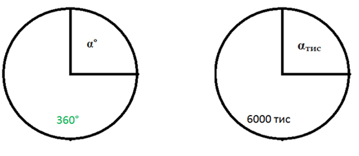
Якщо по-простому то можна представити два однакових кола. Одне поділимо на 6000 рівних частин
(тисячні), а друге поділимо
на 360 рівних частин (градуси).
Тепер на кожному колі візьмемо фактично однакові кути. Нехай один буде α°, а інший буде αтис .
Ну і тепер складаємо просту
пропорцію α° відноситься до 360° так само як αтис відноситься до 6000тис:
Ну а звідси, маючи значення одного з кутів, ми отримаєм інший:
α° = αтис * 360/6000 = αтис * 0,06
αтис = α° * 6000/360 = α° * 16,66666666666667
Зрозуміло, що не обов'язково запам'ятовувати ці пропорції (але корисно на той випадок,
якщо ви забули коефіціент
таким чином ви самі його швидко обрахуєте)
От що корисно запам'ятати:
α° = 0,06 * αтис
αтис = 16,67 * α°
Таблиця переводу градусів в тисячні і навпаки
|
Градуси |
0 |
1 |
2 |
3 |
4 |
5 |
6 |
7 |
8 |
9 |
|
0 |
0 |
0-17 |
0-33 |
0-50 |
0-67 |
0-83 |
1-00 |
1-17 |
1-33 |
1-50 |
|
10 |
1-67 |
1-83 |
2-00 |
2-17 |
2-33 |
2-50 |
2-67 |
2-83 |
3-00 |
3-17 |
|
20 |
3-33 |
3-50 |
3-67 |
3-83 |
4-00 |
4-17 |
4-33 |
4-50 |
4-67 |
4-83 |
|
30 |
5-00 |
5-17 |
5-33 |
5-50 |
5-67 |
5-83 |
6-00 |
6-17 |
6-33 |
6-50 |
|
40 |
6-67 |
6-83 |
7-00 |
7-17 |
7-33 |
7-50 |
7-67 |
7-83 |
8-00 |
8-17 |
|
50 |
8-33 |
8-50 |
8-67 |
8-83 |
9-00 |
9-17 |
9-33 |
9-50 |
9-67 |
9-83 |
|
60 |
10-00 |
10-17 |
10-33 |
10-50 |
10-67 |
10-83 |
11-00 |
11-17 |
11-33 |
11-50 |
|
70 |
11-67 |
11-83 |
12-00 |
12-17 |
12-33 |
12-50 |
12-67 |
12-83 |
13-00 |
13-17 |
|
80 |
13-33 |
13-50 |
13-67 |
13-83 |
14-00 |
14-17 |
14-33 |
14-50 |
14-67 |
14-83 |
|
90 |
15-00 |
- |
- |
- |
- |
- |
- |
- |
- |
- |
Деякі варіанти переведення кутів
| 60-00 = 360º | 30-00 = 180º | 15-00 = 90º | 1-00 = 6º | 0-17 = 1º | 15′= 0-04 |
| 0-10 = 36′ | 0-01 = 3,6′ | 10° = 1-67 | 3° = 0-50 | 30′ = 0-08 |
MOA (кутова хвилина)
MOA (Minute of angle - кутова хвилина) — ще одна поширена кутова величина. Також називають хвилина дуги, кутова хвилина.
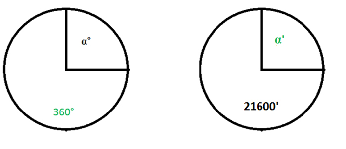Це по суті ті самі хвилини, на які ми ділили градуси і які ми позначали '. Якщо градус складав 1/360 частину від повного кола, і в градусі 60 таких хвилин, тоді відповідно 1 MOA (1') складає 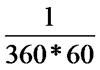 від повного кола. Тобто, коли говоримо про кутові хвилини, ми ділимо коло на 21600 рівних частин.
Альтернативна їй лінійна величина — тисячна відстані.
Кут в 1 MOA на відстані 100 метрів дає відхилення(діаметр кола, довжину дуги, габарит і т.п.) в 2,9089 см (1 дюйм на 100 ярдів)
Для порівняння в першому розділі цієї статі ми бачили що 0-01 тис (одна тисячна) на 100 м дає довжину дуги (відхилення) в 10 см. Відповідно 0-01тис більше 1 MOA в 10/2,9089 = 3,4377 разів. Відповідно за допомогою кутових хвилин можна робити більш точні розрахунки.
1 MOA = 0,2909тис
1 MOA = 1/60 * 1°=0,01667°
Часто використовується для оцінки кучності влучень, поправок при стрільбі, тощо. Ця величина популярна в деяких західних країнах, оскільки вона майже дорівнює одному дюйму на відстані 100 ярдів, а потім розширюється до двох дюймів на двохстах ярдах тощо.
Дуже часто в інструкціях до прицілів, коліматорів можна зустріти таку характеристику як значення 1 кліка в MOA. Тобто на який кут буде зміщатися СТВ при здійсненні одного кліку (зміщенні перехрестя, коліматорної точки в той чи інший бік). Ось наприклад цитата з відомої книги ДЖ. Пластера "Досконалий снайпер":
"Размер шага приращений также стал гораздо более точным. Почти все прицелы, описываемые в этой книге, имеют точное значение клика 1/4 МОА, что в два или даже в четыре раза больше, чем было в прошлом. Необходимо отметить, что в некоторых германских и австрийских прицелах цена клика 1/3 МОА, что является следствием их метрической системы"
Тобто, якщо 1 MOA на 100 м дає відхилення в 2,9089 см, то 1 клік в вищеописаних прицілах забезбечує відхилення в 2,9089/4 = 0,727225 см
Також в літературі про снайпінг часто кучність виражається в MOA і на основі цього показника вважається чи гарна кучність у гвинтівки чи ні. Зазвичай вважається, що для снайперської зброї кучність не більше 1MOA на 100 метрів (тобто всі кулі попали в коло діаметром 3 см) вважається гарною, ну а кучність на рівні 0,5 MOA відмінною. Але звичайно на фактичні результати стрільби впливають дуже багато факторів окрім якості зброї, як то підготвленність стрілка, умови стрільби і т.п.
MIL (мілірадіан)
MIL (мілірадіан) ще одна кутова величина. Якщо повернутись до нашого кола, то в випадку з мілірадіанами ми ділимо коло на 6400 рівних частин
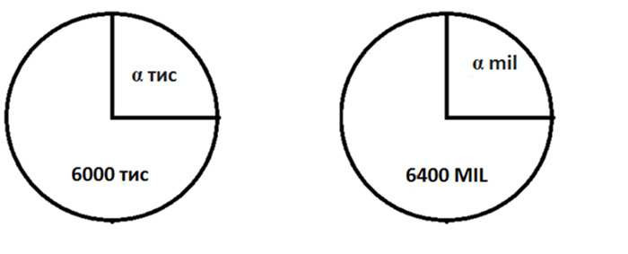
Отже мілірадіаном буде центральний кут, дуга якого дорівнює 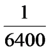
довжини кола,
або 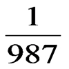 радіуса (дальності).
Нагадую, що тисячною(0-01) зветься центральний кут, дуга якого дорівнює довжини кола, або радіуса (дальності).
Якщо ви пам'ятаєте, то ми число в знаменнику 955 для тисячної округляли до 1000. Так само ми поступаємо і з мілірадіанами - число 987 округляємо до 1000:
Отже мілірадіаном буде центральний кут, дуга якого дорівнює
,кола , або
радіуса (дальності)
Тому MIL зазвичай і називають тисячною, бо фактично після округлення ми отримуємо одне й те
саме значення.
Але ви маєте знати, що фактично це різні кутові величини. Якщо рахувати без округлень
мілірадіан є більш точною
кутовою величиною.